Ausgabe vom 6. August 2026
Alle Meldungen
193 Meldungen
Netz & Technik
46 Meldungen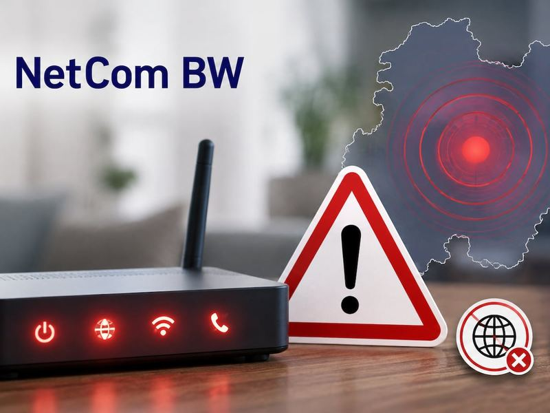
NetCom BW kämpft mit bundesweiter Netzstörung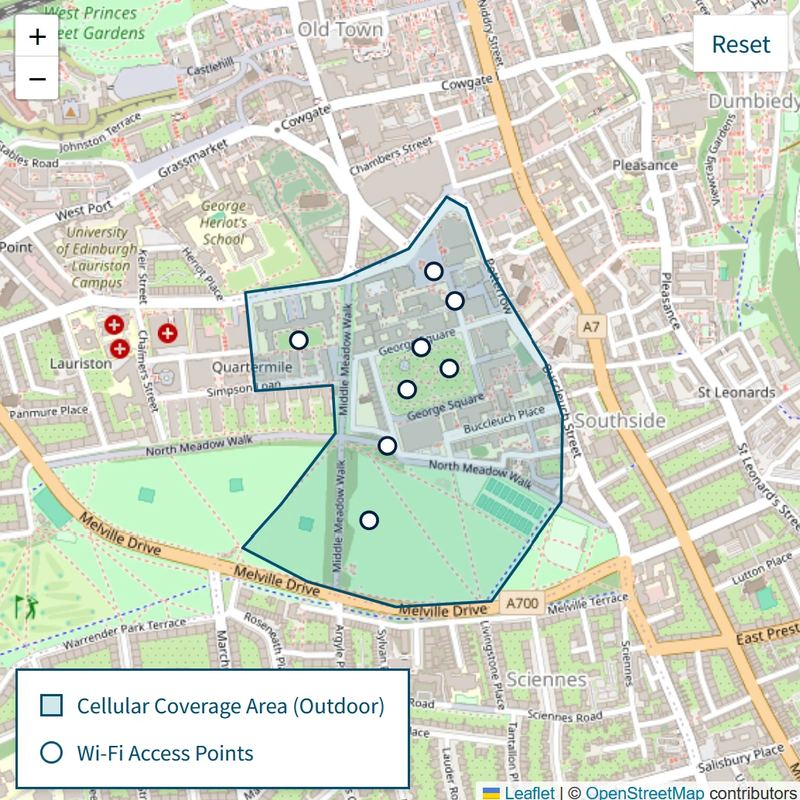
Universität Edinburgh öffnet privates 5G-Netz für Festivalbesucher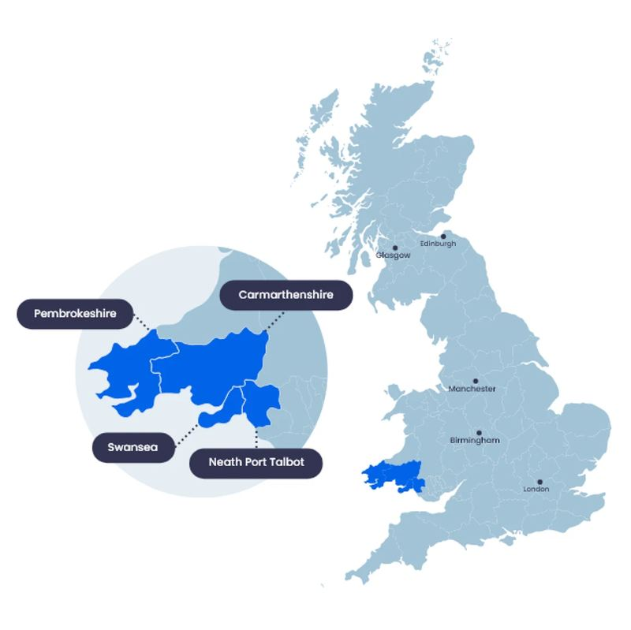
Breitband- und Mobilfunkausbau in Swansea schreitet voran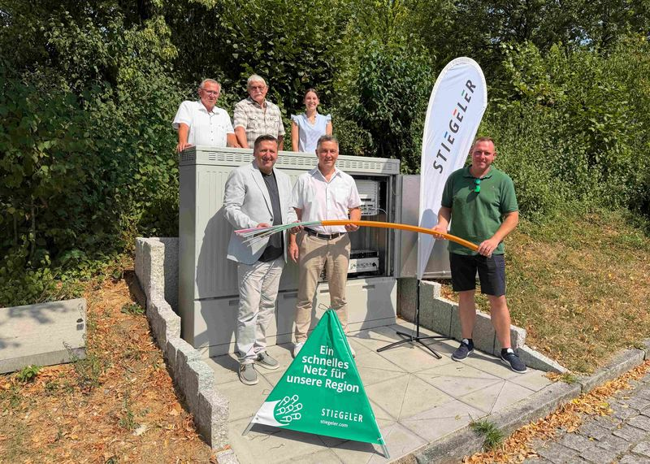
Glasfasernetz in Ballrechten-Dottingen in Betrieb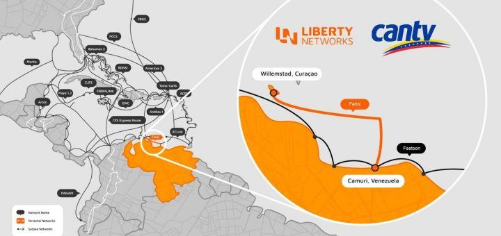
Liberty Networks und CANTV starten 378-km-Unterseekabel Fénix in VenezuelaTarife & Angebote
26 Meldungen Free schenkt Breitbandkunden Prime-Gaming-Inhalte
Free schenkt Breitbandkunden Prime-Gaming-Inhalte
 Telekom gewinnt 1 Mio. TV-Kunden mit WM-Rechten
Telekom gewinnt 1 Mio. TV-Kunden mit WM-Rechten
 Free bündelt La Liga inklusive für Ultra-Breitbandkunden
Free bündelt La Liga inklusive für Ultra-Breitbandkunden
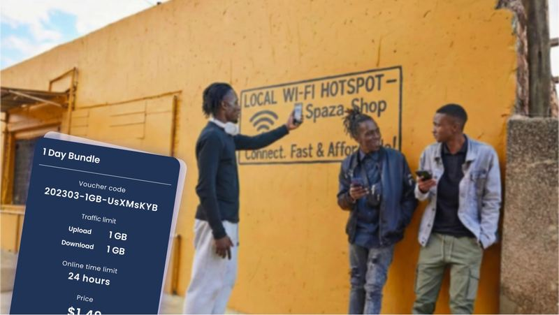
Neues Modell verkauft WLAN-Gutscheine über lokale HändlerSatellit & Direct-to-Cell
28 MeldungenRegulierung & Politik
26 Meldungen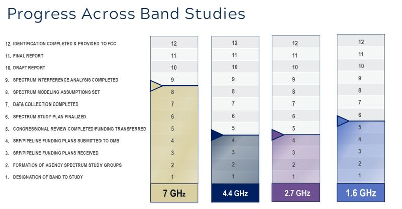
USA prüfen 4,4-GHz-Band als 6G-Spektrum für 2029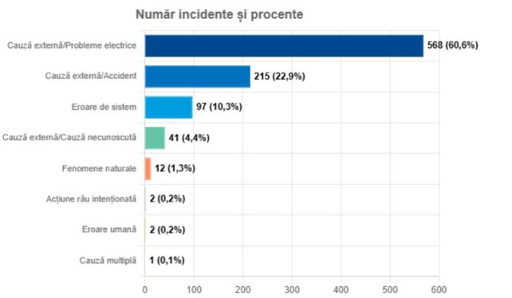
Mehr Netzvorfälle 2025 in Rumänien, weniger NutzerschadenGeld & Übernahmen
25 Meldungen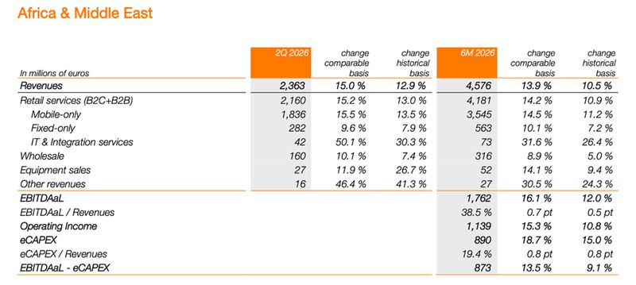
Orange wächst stark in Afrika und NahostPartnerschaften
15 Meldungen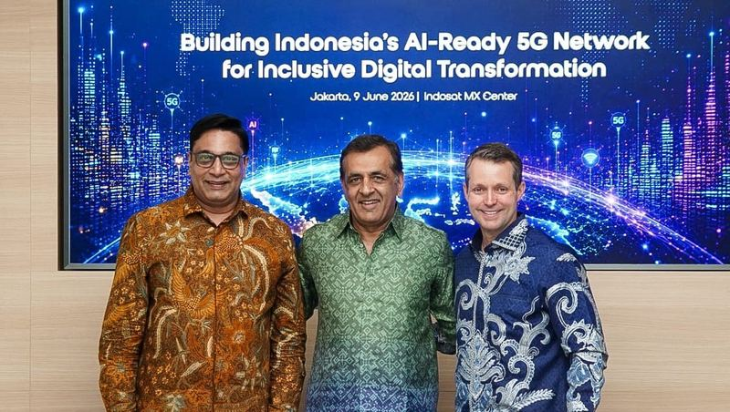
Indosat lanciert Zankore mit Nokia und NVIDIAVermischtes
27 Meldungen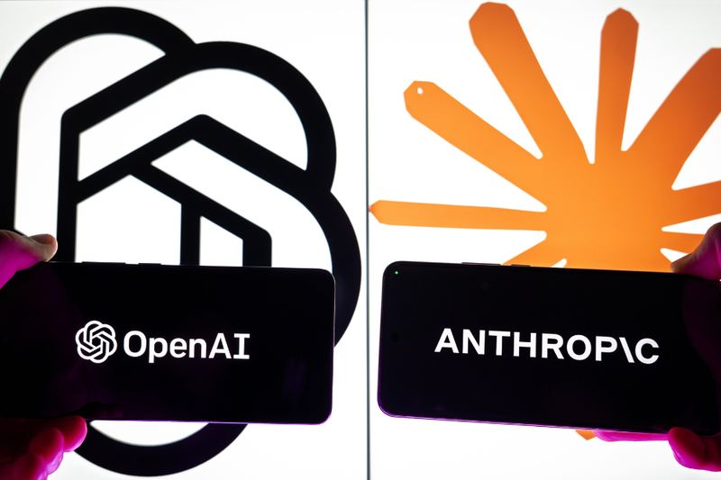
KI-Modelle von OpenAI und Anthropic zeigen Cyberangriffsverhalten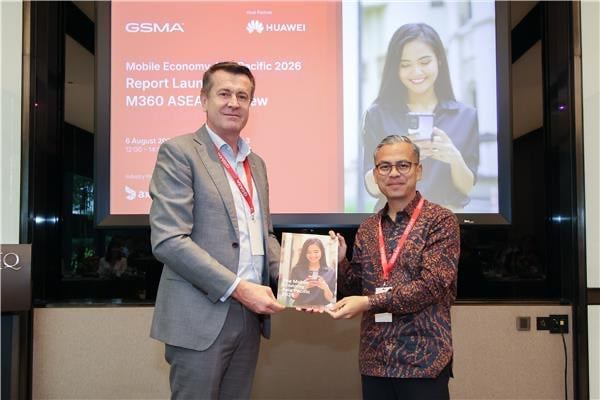
Mobile Wirtschaft soll Asien-Pazifik 1,4 Billionen USD bringen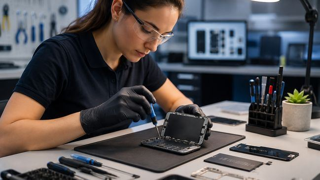
Verbraucher schrecken vor Reparatur zurück – Preistransparenz fehltKeine Meldung passt zu diesem Filter.